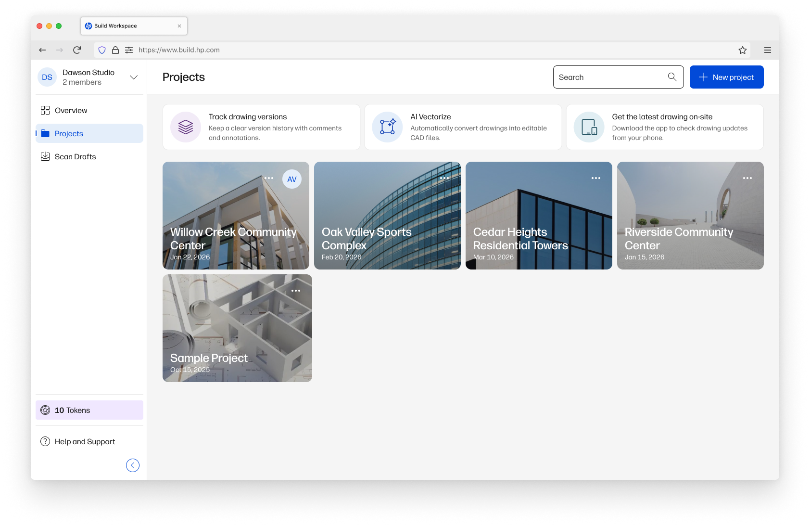
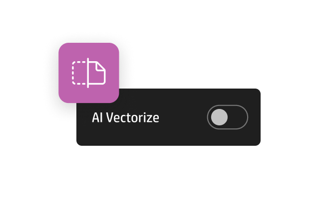

Connecting drawings across physical and digital workflows
Construction projects rely on drawings to plan, communicate, and execute work on site. Yet, the workflow breaks as soon as those drawings move between digital tools and physical environments.

HP Build is a cloud workspace where teams manage digital drawings, track revisions, and collaborate across projects.

On site, drawings are printed, marked up, and used in real conditions through large format multi-function printers.
Drawings are the heart of any construction project, yet managing them across stakeholders, versions, and physical sites is still fragmented. HP Build's overall strategy — which I collaborated on — was designed to make drawings a single source of truth, bridging digital planning with on-site execution.
This strategy aimed to:
- Ensure the correct version reaches the site
- Maintain traceability between printed and digital drawings
- Enable communication directly on drawings
- Connect physical and digital workflows without friction
Turning a break point into an entry point
One thing that immediately stood out was how fragile the user's workflow becomes when a drawing moves from digital to physical.
- Version control often breaks
- Scanned plan markups live outside the system
- Cloud workflows stop at the printer
This creates a natural break point, where the system loses control — but also an opportunity.
Instead of treating the printer as just an output device, we reframed it as a moment of intent: a chance to automatically reconnect printed drawings back into the digital workflow and introduce HP Build at the point it matters most.
By acting here, we could:
- Reconnect printed drawings into the system
- Reduce manual steps like scanning and uploading
- Make the transition between physical and digital workflows feel seamless and smart
Designing a continuous, cross-device workflow
Once we identified the opportunity — the break point between physical and digital drawings — the challenge became: how do we make that connection tangible for users?
My work focused on designing the flows and touchpoints that bridged these worlds, making the integration discoverable, intuitive, and low-friction across devices. The solution was to treat the workflow as a system, not isolated features, and to ensure users could move seamlessly between printer, mobile, and cloud.
Making the printer a visible entry point
AI Vectorize was a new capability, and users had no mental model for triggering it from the printer. Instead of burying it under Scan settings, we made it a primary action on the home screen, clearly communicating the connection to HP Build.


The microcopy reinforced the value: "Scan to editable CAD (HP Build)" clearly told users where the file would go and why it mattered.
Framing printer activation in HP Build
For users already in HP Build, the challenge was helping them understand why connecting the printer adds value.

We designed the activation flow to:
- Highlight capabilities unlocked by the connection
- Make the integration feel like a workflow enhancement, not just a settings task
- Provide clear feedback on what happens after connection
This turned the printer integration into a capability unlock, encouraging engagement beyond the digital workspace.
Supporting seamless cross-device transitions
The workflow spans multiple devices, which is where friction naturally appears. Early testing showed users were confused when switching from printer → mobile → cloud.
We added handoff moments with clear microcopy:
"Continue on your phone to send your scan to HP Build"
"Your file is ready in HP Build — open it to start editing"
These cues reduced hesitation and improved overall flow understanding, making the system feel connected and predictable.
Driving HP Build adoption through DesignJet touchpoints
Designing both ends of the ecosystem created a connected workflow that didn't exist before. Printer users could now discover HP Build directly from their device, and HP Build users could easily leverage their printers — bridging physical and digital workflows seamlessly.
Key results from the flows we designed:
By clarifying transition moments — the points where users move between devices or contexts — we unlocked higher adoption and engagement with HP Build, proving that integration points outside the app itself can drive meaningful business outcomes.
This project reinforced a broader lesson for me as a product designer: sometimes, the most effective onboarding doesn't start inside the product, it starts with the tools users are already familiar with — in this case, the printer in their hands.